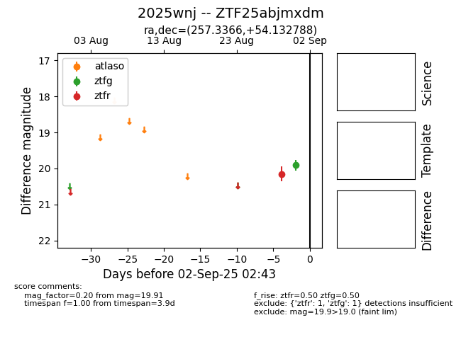

FINK: ZTF25abjmxdm
Lasair: ZTF25abjmxdm
ALeRCE: ZTF25abjmxdm
TNS: 2025wnj
YSE: 2025wnj
ZTF25abjmxdm (ztf,fink)
2025wnj (tns,yse)
equatorial (ra, dec) = (257.3366,+54.13279)
galactic (l, b) = (81.8327,+36.45543)

last ztfg=20.37, ztfr=20.15
2 ztfg, 1 ztfr detections